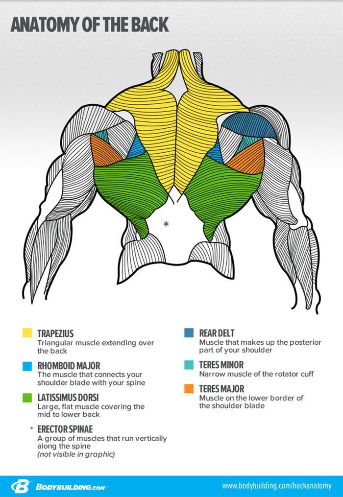
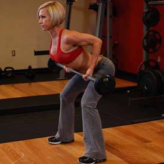
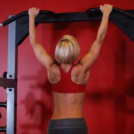
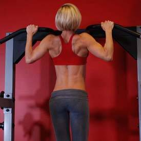
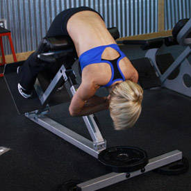
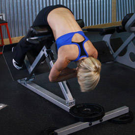

Back

Exercises
Reverse Grip Bent-Over(Middle Back Extensions)
Type :Strength
Main Muscle Worked:Middle Back
Equipment: Barbell
Level: Intermediate
Reverse Grip Bent-Over(Middle Back Extensions) Images
{kind=link}

Reverse Grip Bent-Over Rows Instructions
- Stand erect while holding a barbell with a supinated grip (palms facing up).
- Bend your knees slightly and bring your torso forward, by bending at the waist, while keeping the back straight until it is almost parallel to the floor. Tip: Make sure that you keep the head up. The barbell should hang directly in front of you as your arms hang perpendicular to the floor and your torso. This is your starting position.
- While keeping the torso stationary, lift the barbell as you breathe out, keeping the elbows close to the body and not doing any force with the forearm other than holding the weights. On the top contracted position, squeeze the back muscles and hold for a second.
- Slowly lower the weight again to the starting position as you inhale.
- Repeat for the recommended amount of repetitions.
Pullups(lats Extensions)
Type: Strength
Main Muscle Worked: Lats
Equipment: Body Only
Level: Beginner
Pullups(lats Extensions) Images
 {kind=link}
{kind=link}
Pullups Instructions
- Grab the pull-up bar with the palms facing forward using the prescribed grip. Note on grips: For a wide grip, your hands need to be spaced out at a distance wider than your shoulder width. For a medium grip, your hands need to be spaced out at a distance equal to your shoulder width and for a close grip at a distance smaller than your shoulder width.
- As you have both arms extended in front of you holding the bar at the chosen grip width, bring your torso back around 30 degrees or so while creating a curvature on your lower back and sticking your chest out. This is your starting position.
- Pull your torso up until the bar touches your upper chest by drawing the shoulders and the upper arms down and back. Exhale as you perform this portion of the movement. Tip: Concentrate on squeezing the back muscles once you reach the full contracted position. The upper torso should remain stationary as it moves through space and only the arms should move. The forearms should do no other work other than hold the bar.
- After a second on the contracted position, start to inhale and slowly lower your torso back to the starting position when your arms are fully extended and the
- Repeat this motion for the prescribed amount of repetitions.
re fully stretched.
Hyperextensions (Lower Back Extensions)
Type :Strength
Main Muscle Worked:Forearms
Equipment: Other
Level: Intermediate
Hyperextensions (Lower Back Extensions) Images
 

{kind=link}
Hyperextensions Instructions
- Lie face down on a hyperextension bench, tucking your ankles securely under the footpads.
- Adjust the upper pad if possible so your upper thighs lie flat across the wide pad, leaving enough room for you to bend at the waist without any restriction.
- With your body straight, cross your arms in front of you (my preference) or behind your head. This will be your starting position. Tip: You can also hold a weight plate for extra resistance in front of you under your crossed arms.
- Start bending forward slowly at the waist as far as you can while keeping your back flat. Inhale as you perform this movement. Keep moving forward until you feel a nice stretch on the hamstrings and you can no longer keep going without a rounding of the back. Tip: Never round the back as you perform this exercise. Also, some people can go farther than others. The key thing is that you go as far as your body allows you to without rounding the back.
- Slowly raise your torso back to the initial position as you inhale. Tip: Avoid the temptation to arch your back past a straight line. Also, do not swing the torso at any time in order to protect the back from injury.
- Repeat for the recommended amount of repetitions.